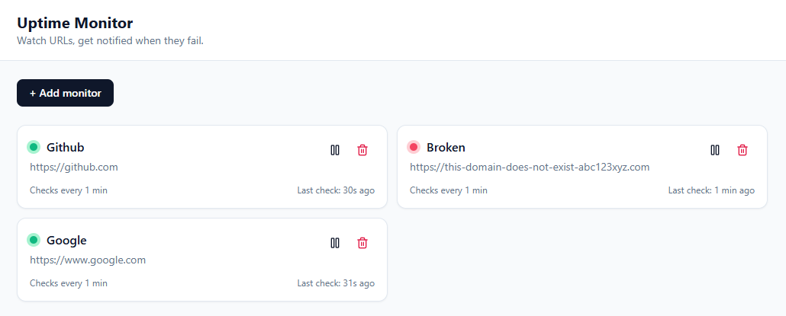

Featured Projects

Uptime Monitor
FeaturedA self-hosted uptime monitor that pings URLs on a schedule, logs response times to Postgres, charts them on a React dashboard, and emails you once when a site goes down.
- 62-test pyramid: Vitest unit, Supertest API integration, and Playwright E2E tests
- Dependency-injected HTTP and SMTP clients so unit tests run offline
- Transactional log writes and up→down alerting, so one outage sends one email
Banking Application
A Java banking app backed by a MySQL database. Users log in to deposit, withdraw, transfer funds between accounts, and review their past transactions.
SkyPalette
A weather application that uses the OpenWeatherMap API to display real-time temperature, humidity, wind speed, and other conditions for any location.
NoteSwift
A lightweight browser note-taking app built with vanilla JavaScript. Create and delete notes, which are saved automatically to local storage so they persist between visits.